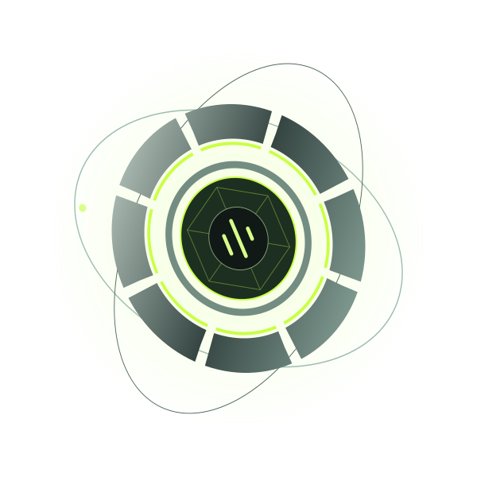
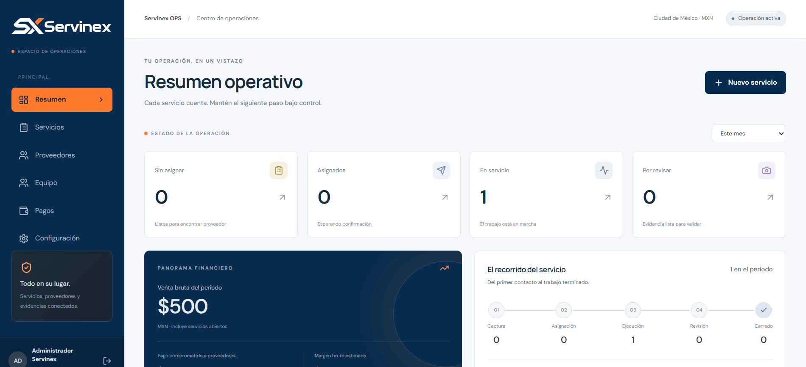

Plataformas a medida
Portales, dashboards y sistemas internos que ordenan tu operación y hacen visibles las decisiones importantes.
Hablemos de tu plataforma
Consultoría de software en México y remoto. Diseñamos plataformas, automatizamos procesos y conectamos hardware industrial — PLC, sensores y control — para que tu operación avance con claridad.
Plataformas digitales: portales, dashboards y software operativo.
Automatización industrial: control, sensores y datos en tiempo real.
Implementación completa: de la idea a la puesta en marcha.
Somos una consultoría tecnológica que une software, automatización y hardware industrial. Diseñamos, implementamos y dejamos sistemas que tu equipo entiende, opera y hace crecer.
Portales, dashboards y sistemas internos que ordenan tu operación y hacen visibles las decisiones importantes.
Hablemos de tu plataformaDiseñamos secuencias, monitoreo y control para que tus procesos funcionen con menos intervención manual.
Automatiza un procesoIntegramos PLC, sensores, actuadores, HMI y tableros para conectar el mundo físico con tu operación digital.
Conecta tu plantaConectamos máquinas, APIs y plataformas, y te acompañamos en la puesta en marcha y la mejora continua.
Integra tus sistemasUna selección de plataformas y automatizaciones que muestran cómo convertimos problemas operativos en sistemas que sí funcionan.

La operación completa en una vista: servicios, proveedores, pagos y márgenes para decidir más rápido.
Abrir repositorioUn ecosistema de dispensado que conecta telemetría, wallets, pagos y verificación segura.
Ver proyectoPortal de mantenimiento que mantiene a propietarios, técnicos y administradores en el mismo flujo.
Abrir repositorioInteracciones nativas, login OTP y datos financieros en una experiencia móvil más simple.
Abrir repositorioDefinimos alcance, indicadores y responsables antes de construir.
Traducimos el proceso a arquitectura, flujos, hardware y una hoja de ruta clara.
Construimos por etapas, probamos con usuarios y validamos en campo.
Medimos, documentamos y ajustamos para que el sistema siga creciendo.
Cuéntanos qué proceso quieres automatizar, qué plataforma necesitas o qué equipo industrial debemos conectar.
hola@nexora.dev